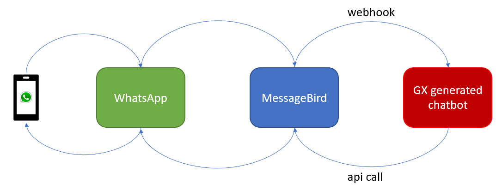

This document shows how to integrate into a new WhatsApp provider with a Conversational Flows object of your knowledge base. Note that for some WhatsApp partners, the solution is already built-in in GeneXus (i.e: Twilio, Botmaker) - for more information, see Howto: Chatbots using WhatsApp. However, the solution is extensible for any partner you want to integrate into, and this document shows how to do it. Here you can use MessageBird as an example, but almost every WhatsApp Provider works the same way, providing two key features.
 First, create the webhook. This webhook will be called by the WhatsApp provider every time someone sends a message to your WhatsApp number. Create a Procedure and make sure you set the Call protocol property to HTTP; next, set the Main program property to True so you can Run it. Your first line in this proc should be getting the actual body. Providers sometimes use the body of a request and sometimes parameters are sent as URL parameters. With the HttpRequest object you can find out what is being sent. &body = &HttpRequest.ToString() If you already have the Structured Data Type needed to handle this payload, you can create an instance of this SDT and load it. &MessageBirdRequest.FromJson(&body) And that’s it. You already have a structure with the data sent by the provider, which has been sent by your user via WhatsApp. Now you want to know what to respond to that text sent. In order to do that, call the SendMessageFromChannel procedure. SendMessageFromChannel(&MessageBirdRequest.message.content.text, &MessageBirdRequest.message.from,"CitizenEnergyService", &AnalyzeResponse) The first parameter is the text of the message, that is, what the user actually wrote on WhatsApp. The second parameter is something that identifies this user, in this case, you can use their phone number. Then comes the name of the ConversationalFlows instance, and finally an instance of the AnalyzeResponse SDT. The AnalyzeRensponse instance has the texts (in the GXResponse collection) needed to be sent to the user according to the Conversational Flow model.
for &gxresponse in &AnalyzeResponse.GXResponse
if &i <> 0
&ReplySDT.content.text += NewLine()
endif
&i += 1
&ReplySDT.content.text += &gxresponse.GXOutput
endfor
Most providers have samples on how to call their API. In GeneXus, you can use the cURL Inspector, which allows you to create a Procedure with the necessary code to reproduce a cURL command sample. In your case, this is the sample provided:
curl -X "POST" "https://conversations.messagebird.com/v1/send" -H "Authorization: AccessKey YOUR-API-KEY" -H "Content-Type: application/json" --data '{ "to":"+31XXXXXXXXX", "from":"WHATSAPP-CHANNEL-ID", "type":"text", "content":{ "text":"Hello!" }, "reportUrl":"https://example.com/reports" }'
And after using GeneXus’ cURL Inspector, this is the generated code:
&HttpClient.AddHeader(!"Authorization", !"AccessKey YOUR-API-KEY")
&HttpClient.AddHeader(!"Content-Type", !"application/json")
&HttpClient.AddString('{ "to":"+31XXXXXXXXX", "from":"WHATSAPP-CHANNEL-ID", "type":"text", "content":{ "text":"Hello!" }, "reportUrl":"https://example.com/reports" }')
&HttpClient.Execute(!"POST", !"https://conversations.messagebird.com/v1/send")
You only need to include the API Key, although it is a good practice to store that key separately from your source code, and parametrize the JSON to be sent with a custom SDT. Note that if you don't have cURL Inspector yet, you'll have to write that code yourself. And that’s it! After calling the SendMessageFromChannel you can call this newly generated Procedure with your own data. Here's an xpz file with the code: See also
|
| Backlinks | |
| Toc:Chatbots in GeneXus | Howto: Chatbots using WhatsApp |
| Multi-experience with GeneXus 17 |